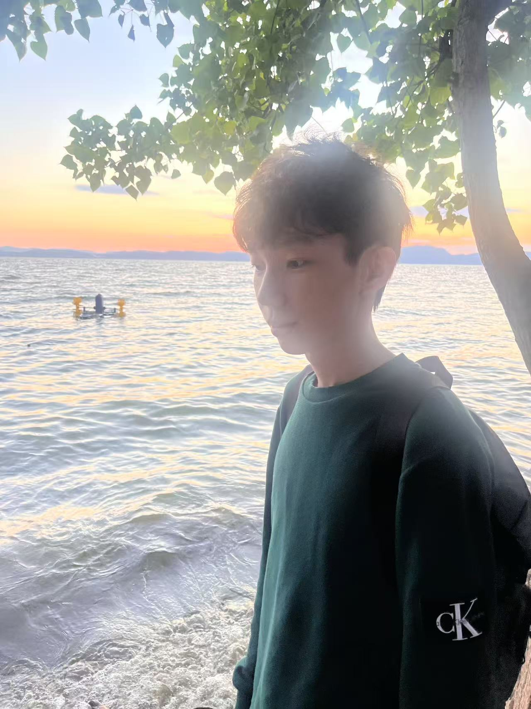

游戏设计 · 玩法开发 · 技术原型
让想象变成
可以玩的世界。
我是胡哲瀚，毕业于乌普萨拉大学游戏设计专业。我用 Unity、Unreal 和 C++，把关卡、玩法和技术原型做成可玩的作品。
探索我的作品一点逻辑。
很多想象。
很多想象。
一个实时运行的小世界01 / 曲面实验
0 / 5能量碎片
01 — 让想法落地
精选作品。
点开项目，看看玩法、
我的工作和改动过程。
更多小实验、新想法，以及正在进行的探索。在 GitHub 看代码 ↗

02 — 像素背后的人
好奇心，
是我的游戏引擎。
我在乌普萨拉大学学习游戏设计，项目涵盖 Unity 关卡与玩法、Unreal 叙事解谜，以及 C++ 游戏 AI 和图形原型。我关心设计选择怎样变成玩家实际能理解、能操作的体验。
团队项目中，我编写交互逻辑、制作实体控制器输入，并为游戏创作音乐；个人技术项目中，我实现状态机、A* 寻路、地图读取和相机控制。目前希望寻找游戏设计、玩法开发与技术原型相关的机会。
不写代码的时候，我也为游戏创作音乐。
常用工具
C++ · C# · Python
Unity · Unreal Engine · raylib
关注方向
关卡设计 · 玩法开发
游戏 AI · 图形原型
03 — 下一个关卡
huzhehanhuzhehan@gmail.com
游戏、图形，
或者一个还没被想出来的新点子。